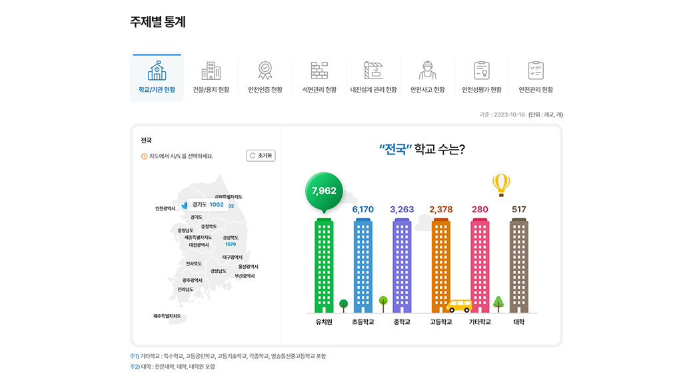
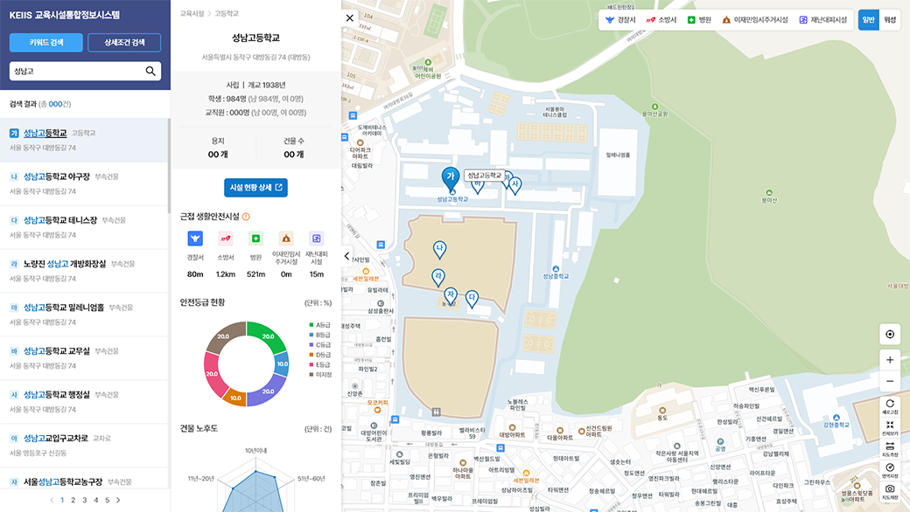

교육시설 통합정보시스템은 유치원부터 초 · 중 · 고 대학 및 평생교육시설까지
대한민국 모든 교육시설의 안전 정보 제공 및 통합 관리 시스템입니다.
교육시설 마스터데이터 체계 구축으로 데이터의 일관성과 유연성을 확보하고
안전한 교육시설 유지관리와 생활안전 정보가 결합된 데이터를 제공합니다.
교육시설통합정보시스템 웹서비스

- 교육시설의 종류별 안전정보 통계 데이터 제공
- 안전 예방 교육, 안전 자료실 등 각종 시설안전 정보 제공
지도기반 교육시설 안전정보 검색

- 지도 기반으로 교육시설 안전정보를 검색하여 도식화된 정보 조회
- 교육시설 인근 생활안전시설 위치와 최단거리 표기
- 침수피해, 교통사고발생지점, 내진설계적용 통계 등 지도기반 시설통계 제공
교육시설 통합정보시스템 관련 법령
「교육시설 등의 안전 및 유지관리 등에 관한 법률」 제23조 교육시설통합정보망의 구축 · 운영 · 공개 등
① 교육부장관은 교육시설의 안전 및 유지관리에 관한 정보를 체계적으로 관리하기 위하여 다음 각 호의 사항이 포함된 교육시설통합정보망(이하 “통합정보망”이라 한다)을 구축ㆍ운영하여야 한다.
- 1. 기본계획ㆍ시행계획ㆍ실행계획
- 2. 교육시설의 현황 및 운영 정보
- 3. 교육시설에 대한 안전인증, 안전점검ㆍ정밀안전진단 이력 정보
- 4. 교육시설의 보수ㆍ보강 등에 관한 사항
- 5. 교육시설 안전관리 인력 현황 정보
- 6. 교육시설안전사고에 대한 현황 정보
- 7. 교육시설 안전관리 교육 대상자 및 교육 이수 현황 정보
- 8. 그 밖에 교육시설에 관한 사항으로서 대통령령으로 정하는 사항
② 통합정보망의 자료는 공개를 원칙으로 한다.
③ 교육부장관은 통합정보망의 운영을 위하여 관계 중앙행정기관의 장, 지방자치단체의 장, 교육감 또는 교육시설의 장 등에게 통합정보망의 구축에 필요한 자료의 제출을 요청할 수 있다. 이 경우 요청을 받은 자는 특별한 사유가 없으면 이에 따라야 한다.
④ 그 밖에 통합정보망의 구축ㆍ운영 등에 필요한 사항은 대통령령으로 정한다.
「교육시설 등의 안전 및 유지관리 등에 관한 법률 시행령」 제22조 교육시설통합정보망의 구축 · 운영
① 법 제23조제1항제8호에서 “대통령령으로 정하는 사항”이란 다음 각 호의 사항을 말한다.
- 1. 법 제9조제1항에 따른 교육시설 관리실태 등에 대한 평가ㆍ점검 결과에 관한 사항
- 2. 법 제10조제3항에 따른 안전ㆍ유지관리기준 준수 여부에 대한 자체 점검 결과에 관한 사항
- 3. 법 제19조제2항에 따른 안전성평가 결과에 관한 사항
- 4. 법 제33조제1항에 따른 전문기관 지정 현황에 관한 사항
② 교육부장관은 법 제23조제1항 각 호의 사항에 관한 정보의 신뢰성과 객관성을 확보할 수 있도록 해당 정보를 정기적으로 확인ㆍ점검해야 한다.